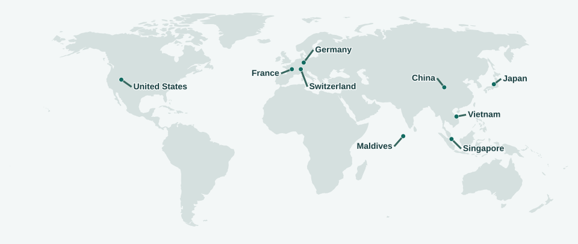

Beyond Research
Piano
I’m preparing for the ABRSM LRSM diploma in Music Performance (Piano). Here’s what’s on my music stand and in my repertoire.
Chopin · Ballade No. 1 in G minor, Op. 23
Coda · Piano performance
Frédéric Chopin
Ballades & other solo works
- Barcarolle in F-sharp major, Op. 60
- Ballade No. 1 in G minor, Op. 23
- Ballade No. 3 in A-flat major, Op. 47
- Ballade No. 4 in F minor, Op. 52In practice
- Scherzo No. 2 in B-flat minor, Op. 31
- Selected nocturnes and preludes
Ludwig van Beethoven
Piano sonatas
- Piano Sonata No. 14 in C-sharp minor, Op. 27 No. 2 (“Moonlight”)All three movements
- Piano Sonata No. 23 in F minor, Op. 57 (“Appassionata”)III. Allegro ma non troppo – Presto
- Piano Sonata No. 8 in C minor, Op. 13 (“Pathétique”)I. Grave – Allegro di molto e con brio; II. Adagio cantabile
Frédéric Chopin & Franz Liszt
Études
- Chopin · Étude in C major, Op. 10 No. 1
- Chopin · Étude in C-sharp minor, Op. 10 No. 4In practice
- Chopin · Étude in A-flat major, Op. 25 No. 1
- Liszt · Grandes études de Paganini, S. 141No. 3 in G-sharp minor (“La campanella”)
- Liszt · Grandes études de Paganini, S. 141No. 6 in A minor (Theme and Variations)
Johann Sebastian Bach
Baroque keyboard works
- Prelude and Fugue No. 6 in D minor, BWV 851In practiceThe Well-Tempered Clavier, Book I
- Prelude and Fugue No. 2 in C minor, BWV 847The Well-Tempered Clavier, Book I
- Sinfonia No. 1 in C major, BWV 787
Arranged by Animenz
Anime piano arrangements
- unravelTokyo Ghoul
- Call of SilenceAttack on Titan
- Crying for Rain (Kawaki wo Ameku)Domestic Girlfriend
- SincerelyViolet Evergarden
- SparkleYour Name.
- Grand EscapeWeathering with You
Travel
Places I’ve visited. In the United States, most of my travels have been in the West.



Asia
China · Japan · Vietnam · Singapore · Maldives · Qatar · United Arab Emirates
Europe
Switzerland · France · Germany
North America
United States